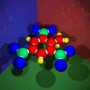

|  |
Classification of Polymers
Thermoplastic Polymers
These are linear, one-dimensional polymers which have strong intramolecular
covalent bonds and weak intermolecular van Der Waals bonds. At elevated
temperature, it is easy to "melt" these bonds and have molecular
chains readily slide past one another. These polymers are capable of flow
at elevated temperatures, can be remolded into different forms, and in
general, are dissolvable. A thermoplastic, under the application of appropriate
heat, can be melted into a "liquid" state.
Thermosetting Polymers
These are three-dimensional amorphous polymers which are highly crosslinked
(strong, covalent intermolecular bonds) networks with no long-range order.
Thermosetting polymers are those resins which are "set" or "polymerized"
through a chemical reaction resulting in crosslinking of the structure
into one large 3-dimensional molecular network. Once the chemical reaction
or polymerization is complete, the polymer becomes a hard, infusible, insoluble
material which cannot be softened, melted or molded non-destructively.
A good example of a thermosetting plastic is a two-part epoxy systems in
which a resin and hardener (both in a viscous state) are mixed and within
several minutes, the polymerization is complete resulting in a hard epoxy
plastic.
Rubbers and Elastomers
In general, a rubber material is one which can be stretched to at least
twice its original length and rapidly contract to its original length.
Rubber must be a high polymer (polymers with very long chains) as rubber
elasticity, from a molecular standpoint, is due to the coiling and uncoiling
of very long chains. To have "rubber-elastic properties" a rubber
materials' use temperature must be above its glass transition temperature
and it must be amorphous in its unstretched state since crystallinity hinders
coiling and uncoiling. Rubbers are lightly crosslinked in order to prevent
chains from slipping past one another under stress without complete recovery.
"Natural rubber" is a thermoplastic, and in its natural form
it becomes "soft" and sticky" on hot days (not a good property
for an automobile tire). In fact, until Mr. Goodyear discovered a curing
reaction with sulfur in 1839, rubbers were not crosslinked and did not
have unique mechanical, rubber-elastic properties.
Fibers
Many of the polymers used for synthetic fibers are identical to those
used in plastics but the two industries developed separately and employ
different testing methods and terminology. A fiber is often defined as
having an aspect ratio (length/diameter) of at least 100. Synthetic fibers
are spun into continuous filaments, or chopped in shorter staple which
are then twisted into thread before weaving. The thickness of the fiber
is expressed in terms of denier which is the weight in grams of a 9000-m
length of fiber. Stresses and strength of fibers are reported in terms
of tenacity in units of grams/denier. In melt spinning, polymer pellets
are gravity fed into an extruder and subjected to shear loading at elevated
temperatures. The softened polymer is delivered to the spinneret which
has up to 1000 shaped holes for fiber formation. A molten stream of polymer
is forced by pressure through shaped holes and stretched into a solid state.
Then the polymer is streched to have molecular alignment along the axial
direction and crystallized in a preferred direction so that no spherulites
form. Synthetic fibers include Kevlar, carbon, PE, PTFE, and nylon while
natural fibers include silk, cotton, wool and wood pulp.
Liquid Crystals
The structure of liquid crystals such as Spectra 1000 is unique. It is a
near-ideal in structure with most of its molecules virtually stretched out.
While this is not useful for textiles, it is excellent for composite
reinforcement. Continuous crystals are readily attained in liquid
crystalline polymers, as the molecules are already aligned in parallel
positions in the melt whereas the continuous morphology of PE would require
elaborate processing to avoid chain entanglement and chain folding.
|